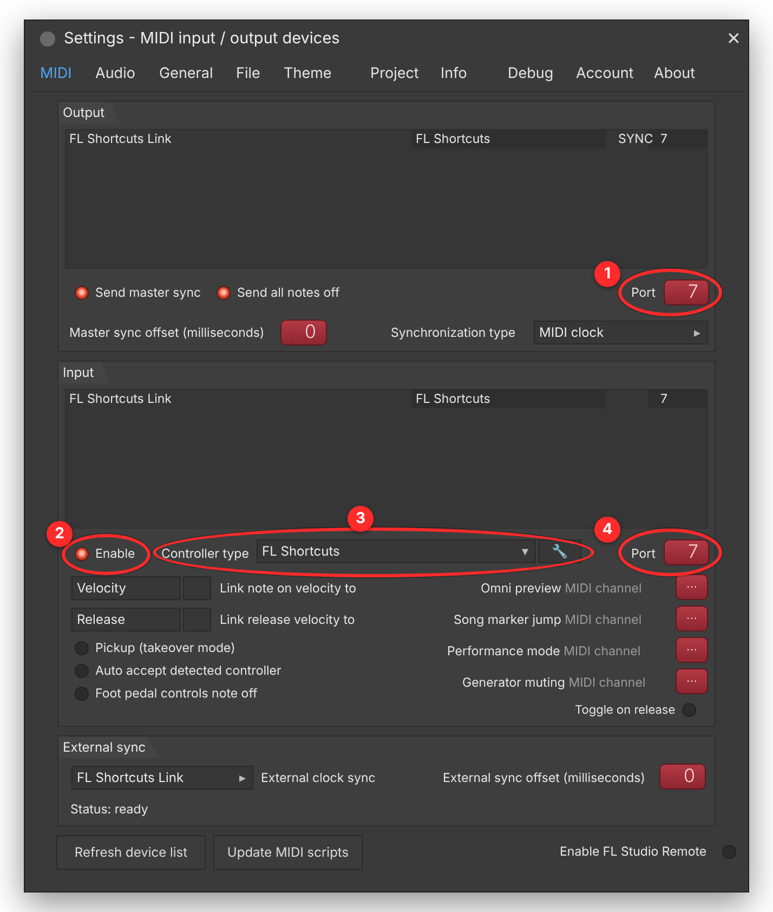

Installer
- Ouvre FLShortcuts.dmg et glisse l'app dans Applications.
- Lance-la : son icône arrive en haut de l'écran.
- macOS la bloque ? Réglages Système › Confidentialité et sécurité › Ouvrir quand même.
Tes raccourcis, tes macros et ton projet rangé dans FL Studio. Sept étapes, à faire une seule fois.
